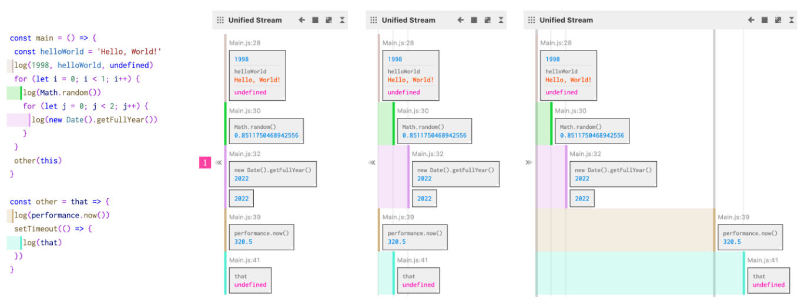

论文：Log-it: Supporting Programming with Interactive, Contextual,Structured, and Visual Logs
作者：Peiling Jiang, Fuling Sun, Haijun Xia
发表：CHI 2023
日志是一种广泛使用的检查和理解程序的技术。然而，日志的表现仍然经常采用其古老的形式，即在终端、控制台或日志文件中的线性文本流。尽管它很简单，但由于大量缺乏结构和上下文的文本日志，解释这些输出往往具有挑战性。本文进行了内容分析和专家访谈，以了解日志中固有的做法和挑战。结果表明，目前对日志的表述并没有提供解释日志或程序行为所需的丰富结构。文章提出了 Log-it，一个使程序员能够在现场交互式地结构化和可视化日志的界面。一项针对新手和专家的用户研究表明，Log-it 的语法和界面学习曲线小，且日志的交互式表示和组织可以帮助程序员轻松定位、综合和理解日志。
论文链接： https://dl.acm.org/doi/10.1145/3544548.3581403
背景介绍
日志是一种广泛使用的检查和理解程序的技术。然而，日志的表现仍然经常采用其古老的形式，即在终端、控制台或日志文件中的线性文本流。尽管它很简单，但由于大量缺乏结构和上下文的文本日志，解释这些输出往往具有挑战性，当下仍缺乏有意义、结构化的日志信息表示方法。
本文贡献如下：
- 通过对专业程序员访谈研究，确定了在基于 JavaScript 的 web 编程中使用日志的内在挑战和需求
- 新颖的基于 web 的日志界面 Log-it，引入了交互式、上下文、结构化和可视化日志的概念
- 对 Log-it 的用户评估，证明了 Log-it 的优势和局限性，并为未来在丰富的可视化和互动环境下的日志界面的发展提供了见解
相关工作
- 理解日志行为
- 缺乏对临时性日志的理解
- 缺乏有意义的组织和日志表现形式
- 支持日志的生成和解释
- 对临时性的日志信息需要实时探索、修改和解释
- 利用可视化理解程序
- 先前工作更多关注在与程序逻辑直接相关的元素（变量、逻辑…）
- 支持程序调试
- 保证简易性和灵活性的前提下改进日志记录
挑战
C1. 日志的输出缺乏有意义的组织
C2. 数据结构缺乏信息可视化和交互
C3. 频繁的视图切换导致的上下文丢失
C4. 输出和理解日志时的权衡
设计目标
DG1.提供有意义、有信息的日志结构
DG2.支持交互式和可视化日志
DG3.在上下文中嵌入日志
DG4.为实现预期的改进而付出最小的努力
实现
一个日志打印语句输出一个或多个日志信息。作者将这些日志结构化为一个流，作为组织日志的单位，而不是将源于同一日志语句的一系列日志输出视为单独的输出。
组成部分：
- Stream Header：展示基本信息和日志数量
- Stream Body：组织由 log 语句产生的日志输出。它默认按时间顺序排列日志项目，并提供丰富的视觉表现
- Stream Menu：提供对日志流的控制按钮
特性：互动性 / 表现性 /上下文
1. 用于探索 Objects 的交互
高亮属性/日志流的同步互动/原位滑动查看
2. 源码和页面的上下文
- 展现原始代码
- 整合流
- 展示代码范围
- 利用颜色展现连接关系
- 将日志附着在视觉元素上

3. 视觉展示
- 将数字日志流转化为水平条形图
- 通过以热图的方式显示一个元素的边界矩形随时间变化的历史，实现元素移动的可视化
- 通过原地滑动，程序员可以选择并查看历史中的特定日志信息
评估
结果
- 上下文和结构化有助于定位日志
- 交互和可视化有助于综合整理日志
- 定位和综合促进理解日志
- 易于学习和使用
- 新手 vs. 专家
- 使用模式、偏好和期望各不相同
- 局限：在时间和用户的使用习惯的影响下，Log-it 更多样化的工作流程难以展现
讨论
- 局限
- 进一步过滤和丢弃过去的日志，最好地描述最新的程序状态
- 探索为特定领域的任务定制一个功能子集
- 更丰富的应用场景
- VR 环境和控制台之间切换
- 将日志线性流映射到 3D 世界的对象上
- 将日志信息作为数据点
- 和更多已有的可视化工具结合，满足更多样的需求
✉️ zjuvis@cad.zju.edu.cn